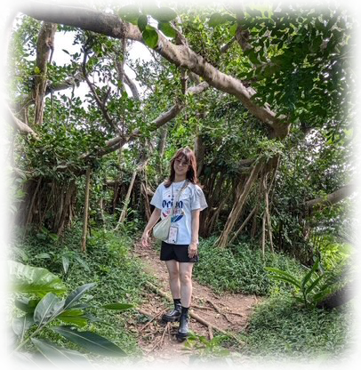
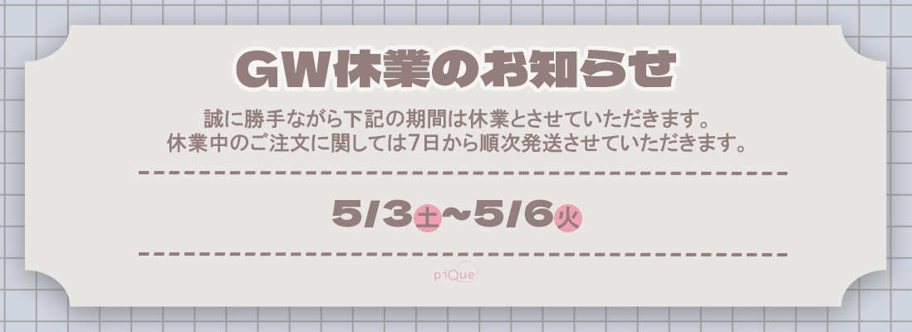
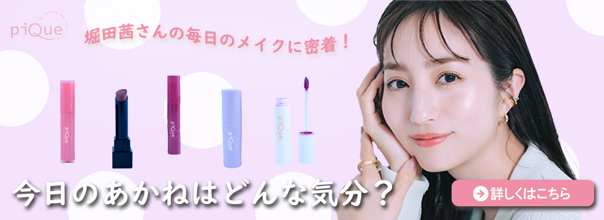
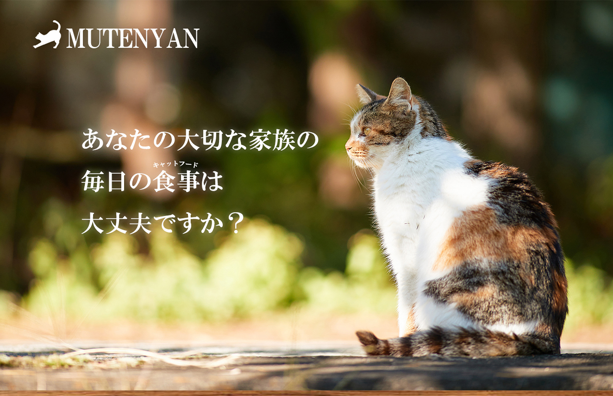
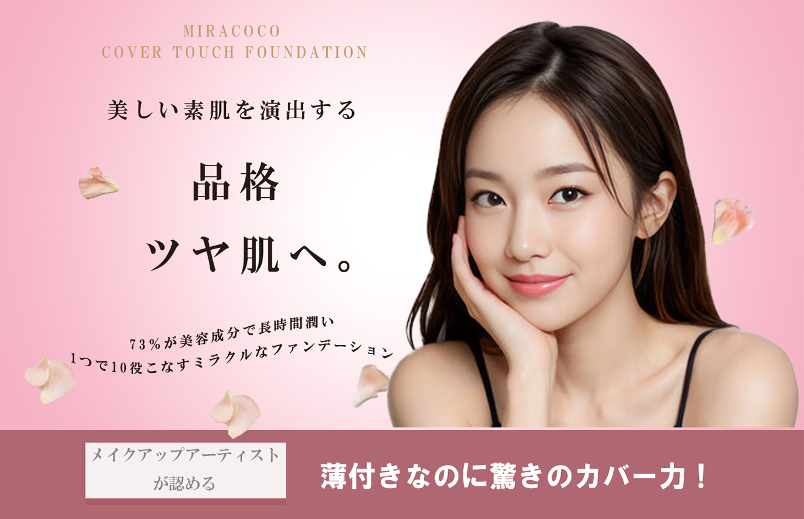
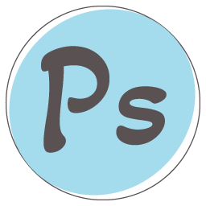
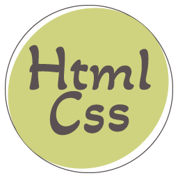
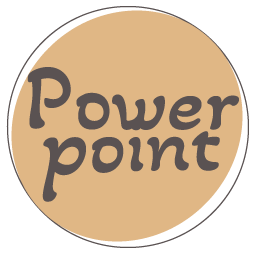
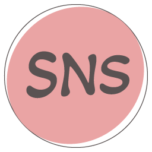

Portfolio
Kaho
わたしのこと
デザインしたもの
できること

Kaho
大阪府堺市出身
高校卒業後は美容専門学校に進学し、卒業後は美容師として約５年、エステティシャン、美容機器や商材の営業として約４年勤務していました。
それぞれの仕事では、SNSを使っての集客や商品の販売にも力を入れていました。
お忙しい中ポートフォリオをご覧いただきありがとうございます。
前職退職後は職業訓練校に半年間通い、ECサイト運営について学びました。
訓練校卒業後は、中国からの輸入品を主に楽天市場から販売する会社にweb担当として入社し、現在も勤務しています。
平日日中の作業はできませんが、平日18時以降、土日祝日の作業になります。
稼働時間の目安としましては週10時間前後かと思います。
連絡はラインでしたら平日日中随時していただいても比較的返信しやすいです。
その他連絡ツールは指定していただきましたら可能な場合もございます。
【現在の仕事内容・できること】
● 楽天市場内の競合他社や世の流行のリサーチをし、販売する商品の選定● 商品ページの画像、LP制作(主にPhotoshop、illustratorを使用)
● メーカーからの画像がない場合は商品の写真撮影
● 商品説明文やキーワード選定、楽天RMSを通じてアップロード
● 広告運用(RPP、セール期間のスポット広告、クーポン発行)
● アクセスや売上を見ながら画像やキーワードの創意工夫
● お問い合わせやレビューへの返信対応
● SNS(Instagram、Threads、X、tiktok)の更新
【私の強み・得意なこと】
● 現在楽天市場１店舗の運営全般をしているので店長のような位置付けでの仕事が可能● 主にバッグやポーチ、ヘアアクセサリー、ファッション雑貨などを取り扱っているのでファッションジャンルを得意としている
● スマホケースや、カー用品、ペット用品等も販売しているので、全世代向けや男性っぽいデザインも可能
● 美容に関する資格を美容師免許をはじめとし、複数保持しているので化粧品等の美容ジャンルも得意としている
● 前職ではフリーランス美容師、エステサロン店長などの経験があり、どんな仕事でも責任感のある仕事を心がけています
10代の頃からの趣味の一眼レフカメラを使って、愛猫や風景の写真を撮影してphotoshopで編集することに最近ハマっています。
旅行やライブに行くこと、美味しいものを食べに行くこと、美容、ヨガ、ピラティスも好きです。
Banner | Web
Banner
-

# 25～39歳働く女性
自社サイト掲載イメージ
自社サイトのイメージカラーのアイスブルー、ピンク、ベージュを使って作成しました。日付や曜日を分かりやすく見えるように工夫しました。
-

# 25～39歳働く女性
自社サイト掲載イメージ
イメージモデルの写真を大きく使ってクリックしたくなるように見せる工夫をしました。色合いは女性がワクワクするような色を意識しました。
-

# 25～40歳男女
自社サイト掲載イメージ
大人が気軽に楽しめるグランピングをアピールしました。気になるお風呂や食事のことも目につくようにまとめました。高級感はあるけれど、敷居は高くないように感じてもらえるようにデザインしました。
Web
-

無添加キャットフードのLPを作成しました。
Web design/Coding
※画像をクリックするとサイトへ移行します。飼い主へ訴えかけるような文言と、無添加を想像できるような木目調や淡い色合いの背景がポイントです。 しっかりとした商品アピールのためにフォントは明朝体ベースで仕上げました。
-

ファンデーションのLPを作成しました。
Web design/Coding,
※画像をクリックするとサイトへ移行します２０代女性をターゲットとして作ったので、色合いはピンクと白を基調とし、ふんわりとした雰囲気に仕上げました。 フォントは親近感を持たせるために所々ゴシック体を使用しました。
-

Photoshop
レタッチ・画像切り抜き・加工・バナー制作が可能です。
★2025年2月
アドビ認定プロフェッショナルphotoshop2023合格 -
Illustrator
簡単なロゴ・アイコン・バナーの作成、画像のパス化が可能です。
-

HTML/CSS
Webサイト制作、レスポンシブデザインの基本的なコーディングが可能です。
-
Word
文書作成、表作成、イラスト・図形等の挿入が可能です。
-
Excel
数式(IF,VLOOKUPなど)を用いた表、グラフ作成、ピポットデーブルの利用が可能です。
-

PowerPoint
図や写真、動画を挿入して 会議の資料作成、スライドショーの作成が可能です。
-
PremierePro
エフェクトやテロップの挿入、複数の動画を用いた制作、サイトへ動画の挿入が可能です。
-

SNS
SNS各種(Instagram、Threads、X、tiktok)の更新が可能です。